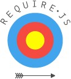
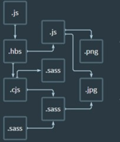
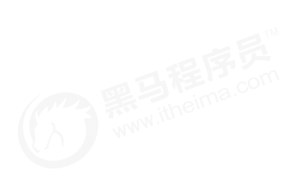
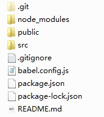

目


模块化相关规范
Contents
webpack
Vue 单文件组件
Vue 脚手架
Element-UI 的基本使用

 1. 模块化相关规范
1. 模块化相关规范

① 命名冲突
② 文件依赖
模块化就是把单独的一个功能封装到一个模块（文件）中，模块之间相互隔离，但是可以通过特定的接口公开内部成
员，也可以依赖别的模块
模块化开发的好处：方便代码的重用，从而提升开发效率，并且方便后期的维护

 1. 模块化相关规范
1. 模块化相关规范


Sea.js (https://seajs.github.io/seajs/docs/)

 1. 模块化相关规范
1. 模块化相关规范

① 模块分为 单文件模块 与 包
② 模块成员导出：module.exports 和 exports
③ 模块成员导入：require('模块标识符')

 1. 模块化相关规范
1. 模块化相关规范

在 ES6 模块化规范诞生之前，Javascript 社区已经尝试并提出了 AMD、CMD、CommonJS 等模块化规范。
但是，这些社区提出的模块化标准，还是存在一定的差异性与局限性、并不是浏览器与服务器通用的模块化标准，例如：
AMD 和 CMD 适用于浏览器端的 Javascript 模块化
CommonJS 适用于服务器端的 Javascript 模块化
因此，ES6 语法规范中，在语言层面上定义了 ES6 模块化规范，是浏览器端与服务器端通用的模块化开发规范。
ES6模块化规范中定义：
每个 js 文件都是一个独立的模块
导入模块成员使用 import 关键字
暴露模块成员使用 export 关键字

 1. 模块化相关规范
1. 模块化相关规范

① npm install --save-dev @babel/core @babel/cli @babel/preset-env @babel/node
const presets = [
["@babel/env", {
targets: {
edge: "17",
firefox: "60",
chrome: "67",
safari: "11.1"
}
}]
];
module.exports = { presets };
② npm install --save @babel/polyfill
③ 项目跟目录创建文件 babel.config.js
④ babel.config.js 文件内容如右侧代码
⑤ 通过 npx babel-node index.js 执行代码

 1. 模块化相关规范
1. 模块化相关规范
// 当前文件模块为 m1.js
// 定义私有成员 a 和 c
let a = 10
let c = 20
// 外界访问不到变量 d ,因为它没有被暴露出去
let d = 30
function show() {}
// 将本模块中的私有成员暴露出去，供其它模块使用
export default {
a,
c,
show
}

默认导出语法 export default 默认导出的成员
默认导入语法 import 接收名称 from '模块标识符'
// 导入模块成员
import m1 from './m1.js'
console.log(m1)
// 打印输出的结果为：
// { a: 10, c: 20, show: [Function: show] }
注意：每个模块中，只允许使用唯一的一次 export default，否则会报错！

 1. 模块化相关规范
1. 模块化相关规范

按需导出语法 export let s1 = 10
按需导入语法 import { s1 } from '模块标识符'
// 导入模块成员
import { s1, s2 as ss2, say } from './m1.js'
console.log(s1) // 打印输出 aaa
console.log(ss2) // 打印输出 ccc
console.log(say) // 打印输出 [Function: say]
// 当前文件模块为 m1.js
// 向外按需导出变量 s1
export let s1 = 'aaa'
// 向外按需导出变量 s2
export let s2 = 'ccc'
// 向外按需导出方法 say
export function say = function() {}
注意：每个模块中，可以使用多次按需导出

 1. 模块化相关规范
1. 模块化相关规范

有时候，我们只想单纯执行某个模块中的代码，并不需要得到模块中向外暴露的成员，此时，可以直接导入并执行模块代码。
// 直接导入并执行模块代码
import './m2.js'
// 当前文件模块为 m2.js
// 在当前模块中执行一个 for 循环操作
for(let i = 0; i < 3; i++) {
console.log(i)
}

目


模块化相关规范
Contents
webpack
Vue 单文件组件
Vue 脚手架
Element-UI 的基本使用

 2. webpack
2. webpack

文件依赖关系错综复杂
静态资源请求效率低
模块化支持不友好
浏览器对高级 Javascript 特性兼容程度较低
etc…

 2. webpack
2. webpack

webpack 是一个流行的前端项目构建工具（打包工具），可以解决当前web 开发中所面临的困境。
webpack 提供了友好的模块化支持，以及代码压缩混淆、处理 js 兼容问题、性能优化等强大的功能，从而让程序员把
工作的重心放到具体的功能实现上，提高了开发效率和项目的可维护性。

目前绝大多数企业中的前端项目，都是基于 webpack 进行打包构建的。

 2. webpack
2. webpack

① 新建项目空白目录，并运行 npm init –y 命令，初始化包管理配置文件 package.json
② 新建 src 源代码目录
③ 新建 src -> index.html 首页
④ 初始化首页基本的结构
⑤ 运行 npm install jquery –S 命令，安装 jQuery
⑥ 通过模块化的形式，实现列表隔行变色效果

 2. webpack
2. webpack

① 运行 npm install webpack webpack-cli –D 命令，安装 webpack 相关的包
② 在项目根目录中，创建名为 webpack.config.js 的 webpack 配置文件
③ 在 webpack 的配置文件中，初始化如下基本配置：
module.exports = {
mode: 'development' // mode 用来指定构建模式
}
④ 在 package.json 配置文件中的 scripts 节点下，新增 dev 脚本如下：
"scripts": {
"dev": "webpack" // script 节点下的脚本，可以通过 npm run 执行
}
⑤ 在终端中运行 npm run dev 命令，启动 webpack 进行项目打包。

 2. webpack
2. webpack

webpack 的 4.x 版本中默认约定：
打包的入口文件为 src -> index.js
打包的输出文件为 dist -> main.js
如果要修改打包的入口与出口，可以在 webpack.config.js 中新增如下配置信息：
const path = require('path') // 导入 node.js 中专门操作路径的模块
module.exports = {
entry: path.join( dirname, './src/index.js'), // 打包入口文件的路径
output: {
path: path.join( dirname, './dist'), // 输出文件的存放路径
filename: 'bundle.js' // 输出文件的名称
}
}

 2. webpack
2. webpack

① 运行 npm install webpack-dev-server –D 命令，安装支持项目自动打包的工具
② 修改 package.json -> scripts 中的 dev 命令如下：
"scripts": {
"dev": "webpack-dev-server" // script 节点下的脚本，可以通过 npm run 执行
}
③ 将 src -> index.html 中，script 脚本的引用路径，修改为 "/buldle.js“
④ 运行 npm run dev 命令，重新进行打包
⑤ 在浏览器中访问 http://localhost:8080 地址，查看自动打包效果
注意：
webpack-dev-server 会启动一个实时打包的 http 服务器
webpack-dev-server 打包生成的输出文件，默认放到了项目根目录中，而且是虚拟的、看不见的

 2. webpack
2. webpack

① 运行 npm install html-webpack-plugin –D 命令，安装生成预览页面的插件
② 修改 webpack.config.js 文件头部区域，添加如下配置信息：
// 导入生成预览页面的插件，得到一个构造函数
const HtmlWebpackPlugin = require('html-webpack-plugin')
const htmlPlugin = new HtmlWebpackPlugin({ // 创建插件的实例对象
template: './src/index.html', // 指定要用到的模板文件
filename: 'index.html' // 指定生成的文件的名称，该文件存在于内存中，在目录中不显示
})
③ 修改 webpack.config.js 文件中向外暴露的配置对象，新增如下配置节点：
module.exports = {
plugins: [ htmlPlugin ] // plugins 数组是 webpack 打包期间会用到的一些插件列表
}

 2. webpack
2. webpack

// package.json中的配置
// --open 打包完成后自动打开浏览器页面
// --host 配置 IP 地址
// --port 配置端口
"scripts": {
"dev": "webpack-dev-server --open --host 127.0.0.1 --port 8888"
},

 2. webpack
2. webpack

在实际开发过程中，webpack 默认只能打包处理以 .js 后缀名结尾的模块，其他非 .js 后缀名结
尾的模块，webpack 默认处理不了，需要调用 loader 加载器才可以正常打包，否则会报错！
loader 加载器可以协助 webpack 打包处理特定的文件模块，比如：
less-loader 可以打包处理 .less 相关的文件
sass-loader 可以打包处理 .scss 相关的文件
url-loader 可以打包处理 css 中与 url 路径相关的文件

 2. webpack
2. webpack

是
是否配置了
babel
是
是否包含
高级js语法
否
否 webpack处理
是否为
js模块
是 调loader处理
否
是否配置了
对应loader
报错
报错
调loader处理
将要被webpack打
包处理的文件模块
是
否

 2. webpack
2. webpack


CSS
LESS
SCSS
PostCSS
JavaScript
Image/Font
Vue

 2. webpack
2. webpack

① 运行 npm i style-loader css-loader -D 命令，安装处理 css 文件的 loader
② 在 webpack.config.js 的 module -> rules 数组中，添加 loader 规则如下：
// 所有第三方文件模块的匹配规则
module: {
rules: [
{ test: /\.css$/, use: ['style-loader', 'css-loader'] }
]
}
其中，test 表示匹配的文件类型， use 表示对应要调用的 loader
注意：
use 数组中指定的 loader 顺序是固定的
多个 loader 的调用顺序是：从后往前调用

 2. webpack
2. webpack

① 运行 npm i less-loader less -D 命令
② 在 webpack.config.js 的 module -> rules 数组中，添加 loader 规则如下：
// 所有第三方文件模块的匹配规则
module: {
rules: [
{ test: /\.less$/, use: ['style-loader', 'css-loader', 'less-loader'] }
]
}

 2. webpack
2. webpack

① 运行 npm i sass-loader node-sass -D 命令
② 在 webpack.config.js 的 module -> rules 数组中，添加 loader 规则如下：
// 所有第三方文件模块的匹配规则
module: {
rules: [
{ test: /\.scss$/, use: ['style-loader', 'css-loader', 'sass-loader'] }
]
}

 2. webpack
2. webpack

① 运行 npm i postcss-loader autoprefixer -D 命令
② 在项目根目录中创建 postcss 的配置文件 postcss.config.js，并初始化如下配置：
const autoprefixer = require('autoprefixer') // 导入自动添加前缀的插件
module.exports = {
plugins: [ autoprefixer ] // 挂载插件
}
③ 在 webpack.config.js 的 module -> rules 数组中，修改 css 的 loader 规则如下：
module: {
rules: [
{ test:/\.css$/, use: ['style-loader', 'css-loader', 'postcss-loader'] }
]
}

 2. webpack
2. webpack

① 运行 npm i url-loader file-loader -D 命令
② 在 webpack.config.js 的 module -> rules 数组中，添加 loader 规则如下：
module: {
rules: [
{
test: /\.jpg|png|gif|bmp|ttf|eot|svg|woff|woff2$/,
use: 'url-loader?limit=16940'
}
]
}
其中 ? 之后的是 loader 的参数项。
limit 用来指定图片的大小，单位是字节(byte),只有小于 limit 大小的图片，才会被转为 base64 图片

 2. webpack
2. webpack

① 安装babel转换器相关的包：npm i babel-loader @babel/core @babel/runtime -D
② 安装babel语法插件相关的包：npm i @babel/preset-env @babel/plugin-transform-
runtime @babel/plugin-proposal-class-properties –D
③ 在项目根目录中，创建 babel 配置文件 babel.config.js 并初始化基本配置如下：
module.exports = {
presets: [ '@babel/preset-env' ],
plugins: [ '@babel/plugin-transform-runtime', '@babel/plugin-proposal-
class-properties’ ]
}
④ 在 webpack.config.js 的 module -> rules 数组中，添加 loader 规则如下：
// exclude 为排除项，表示 babel-loader 不需要处理 node_modules 中的 js 文件
{ test: /\.js$/, use: 'babel-loader', exclude: /node_modules/ }

目


模块化相关规范
Contents
webpack
Vue 单文件组件
Vue 脚手架
Element-UI 的基本使用


1. 问题
全局定义的组件必须保证组件的名称不重复
字符串模板缺乏语法高亮，在 HTML 有多行的时候，需要用到丑陋的 \
不支持 CSS 意味着当 HTML 和 JavaScript 组件化时，CSS 明显被遗漏
没有构建步骤限制，只能使用 HTML 和 ES5 JavaScript, 而不能使用预处理器（如：Babel）
解决方案
针对传统组件的问题，Vue 提供了一个解决方案 —— 使用 Vue 单文件组件。

单文件组件的组成结构
template 组件的模板区域
script 业务逻辑区域
style 样式区域

<template>
<!-- 这里用于定义Vue组件的模板内容 -->
</template>
<script>
// 这里用于定义Vue组件的业务逻辑
export default {
data: () { return {} }, // 私有数据
methods: {} // 处理函数
// ... 其它业务逻辑
}
</script>
<style scoped>
/* 这里用于定义组件的样式 */
</style>


① 运行 npm i vue-loader vue-template-compiler -D 命令
② 在 webpack.config.js 配置文件中，添加 vue-loader 的配置项如下：
const VueLoaderPlugin = require('vue-loader/lib/plugin')
module.exports = {
module: {
rules: [
// ... 其它规则
{ test: /\.vue$/, loader: 'vue-loader' }
]
},
plugins: [
// ... 其它插件
new VueLoaderPlugin() // 请确保引入这个插件！
]
}


① 运行 npm i vue –S 安装 vue
② 在 src -> index.js 入口文件中，通过 import Vue from 'vue' 来导入 vue 构造函数
③ 创建 vue 的实例对象，并指定要控制的 el 区域
④ 通过 render 函数渲染 App 根组件
// 1. 导入 Vue 构造函数
import Vue from 'vue'
// 2. 导入 App 根组件
import App from './components/App.vue'
const vm = new Vue({
// 3. 指定 vm 实例要控制的页面区域
el: '#app',
// 4. 通过 render 函数，把指定的组件渲染到 el 区域中
render: h => h(App)
})


上线之前需要通过webpack将应用进行整体打包，可以通过 package.json 文件配置打包命令：
// 在package.json文件中配置 webpack 打包命令
// 该命令默认加载项目根目录中的 webpack.config.js 配置文件
"scripts": {
// 用于打包的命令
"build": "webpack -p",
// 用于开发调试的命令
"dev": "webpack-dev-server --open --host 127.0.0.1 --port 3000",
},

目


模块化相关规范
Contents
webpack
Vue 单文件组件
Vue 脚手架
Element-UI 的基本使用


Vue 脚手架用于快速生成 Vue 项目基础架构，其官网地址为：https://cli.vuejs.org/zh/
使用步骤
安装 3.x 版本的 Vue 脚手架：
npm install -g @vue/cli


基于3.x版本的脚手架创建vue项目
// 1. 基于 交互式命令行 的方式，创建 新版 vue 项目
vue create my-project
// 2. 基于 图形化界面 的方式，创建 新版 vue 项目
vue ui
// 3. 基于 2.x 的旧模板，创建 旧版 vue 项目
npm install -g @vue/cli-init
vue init webpack my-project



依赖包目录
静态资源目录
组件源码目录
Babel配置文件


通过 package.json 配置项目
// 必须是符合规范的json语法
"vue": {
"devServer": {
"port": "8888",
"open" : true
}
},
注意：不推荐使用这种配置方式。因为 package.json 主要用来管理包的配置信息；为了方便维护，推荐将 vue 脚
手架相关的配置，单独定义到 vue.config.js 配置文件中。


通过单独的配置文件配置项目
① 在项目的跟目录创建文件 vue.config.js
② 在该文件中进行相关配置，从而覆盖默认配置
// vue.config.js
module.exports = {
devServer: {
port: 8888
}
}

目


模块化相关规范
Contents
webpack
Vue 单文件组件
Vue 脚手架
Element-UI 的基本使用


Element-UI：一套为开发者、设计师和产品经理准备的基于 Vue 2.0 的桌面端组件库。
官网地址为： http://element-cn.eleme.io/#/zh-CN
1. 基于命令行方式手动安装
① 安装依赖包 npm i element-ui –S
② 导入 Element-UI 相关资源
// 导入组件库
import ElementUI from 'element-ui';
// 导入组件相关样式
import 'element-ui/lib/theme-chalk/index.css';
// 配置 Vue 插件
Vue.use(ElementUI);

2. 基于图形化界面自动安装
① 运行 vue ui 命令，打开图形化界面
② 通过 Vue 项目管理器，进入具体的项目配置面板
③ 点击 插件 -> 添加插件，进入插件查询面板
④ 搜索 vue-cli-plugin-element 并安装
⑤ 配置插件，实现按需导入，从而减少打包后项目的体积